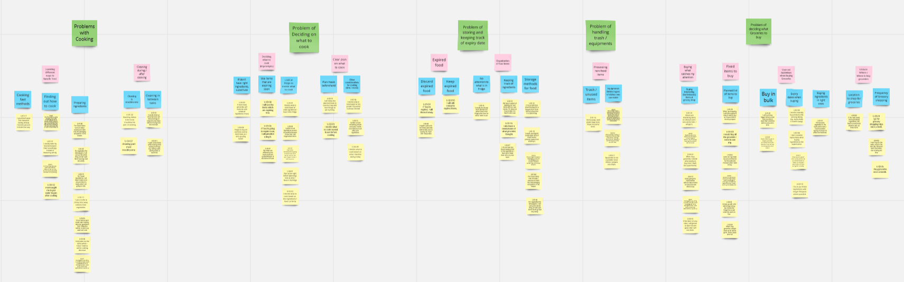

Research
Methodology
User Identification
We have decided to select our primary users as international university students as they are technologically savvy, relatable (we are university students ourselves), and they have a need for saving time, due to living alone with many priorities.
User Research

Surveys
An initial survey was conducted to obtain the sentiments of our target audience’s perspective, habits and experiences with cooking and grocery shopping, so we might have a general idea of the issues faced by international university students in Singapore with regards to cooking.

Contextual Inquiry (CI)
As cooking and grocery shopping is a more hands-on activity that may be difficult to describe, a CI where watching the target audience perform their task up close, learning and asking critical questions help us to deepen our understanding of their processes and identify any inconveniences faced.
Affinity Diagram
We then organised our CI findings into an affinity diagram, where we identified some key observations.
 Affinity DiagramEmpathy Map
From the key observations obtained from the affinity diagram, we constructed an empathy map to gain a better understanding of our target users. We identified 3 main issues, groceries, expired food, and deciding what to cook.

Empathy Map
User Journey
From the key observations obtained from the affinity diagram, we constructed an empathy map to gain a better understanding of our target users. We identified 3 main issues, groceries, expired food, and deciding what to cook.
 User Journey
User Journey
Key User Tasks
From all of the above methods, we came up with these final 3 key user tasks.
Users should be able to quickly decide what to cook based on their ingredients, mood and cooking skills.
Users should be able to get suggested recipes on their expiring ingredients.
Users should be able to generate a list of ingredients to buy at the supermarket to ensure they do not miss out on any items.